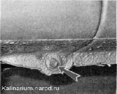
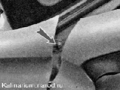
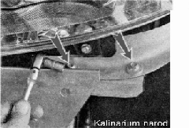
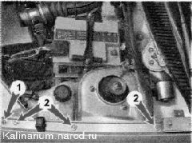

Переднее крыло снятие и установкаСнятие 1. Подготавливаем автомобиль к выполнению работы. 2. Снимаем подкрылок снимаемого крыла. 3. Снимаем боковой указатель поворота 4. Снимаем передний бампер. 5. Очищаем от мастики головку самореза нижнего крепления крыла и отворачиваем ключом на 8 мм.  6. Открыв переднюю дверь, торцовым ключом на 8 мм отворачиваем саморез заднего крепления крыла.  7. Ключом той же размерности отворачиваем два самореза переднего крепления крыла. 
8. Крестовой отверткой отворачиваем один саморез 1 и торцовым ключом на 8 мм отворачиваем три самореза 2 верхнего крепления крыла. 9. Аккуратно ножом подрезаем слой герметика с внутренней стороны крыла и снимаем крыло. Установка Устанавливаем крыло в обратной последовательности. Перед затягиванием саморезов, добиваемся равномерного зазора |